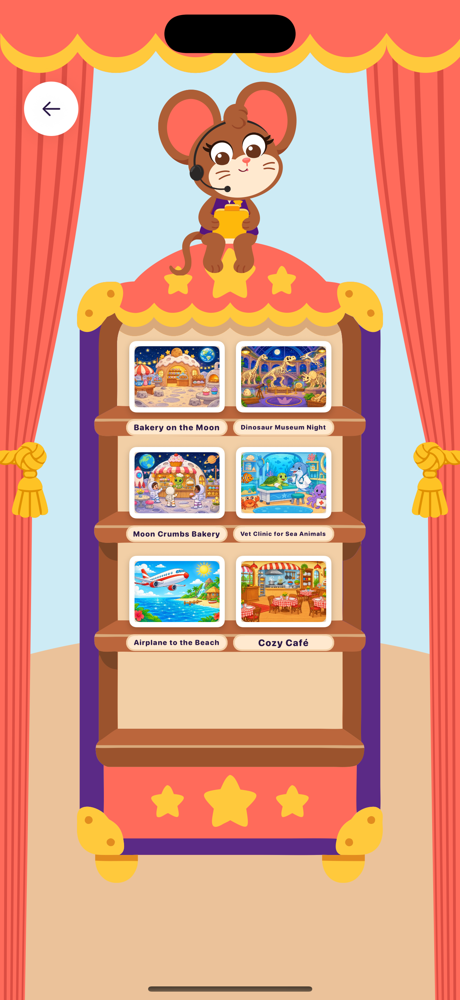
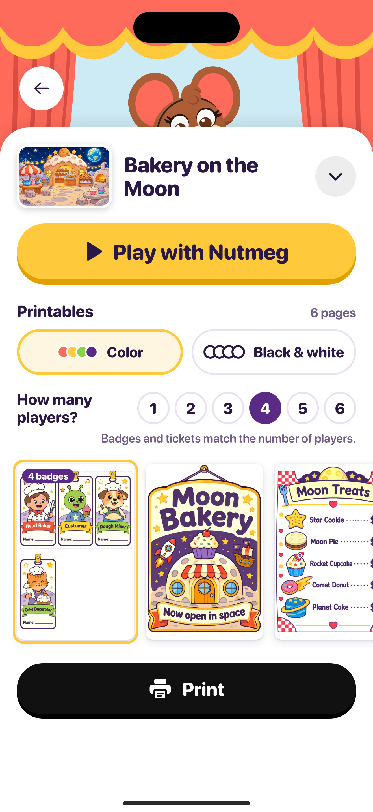
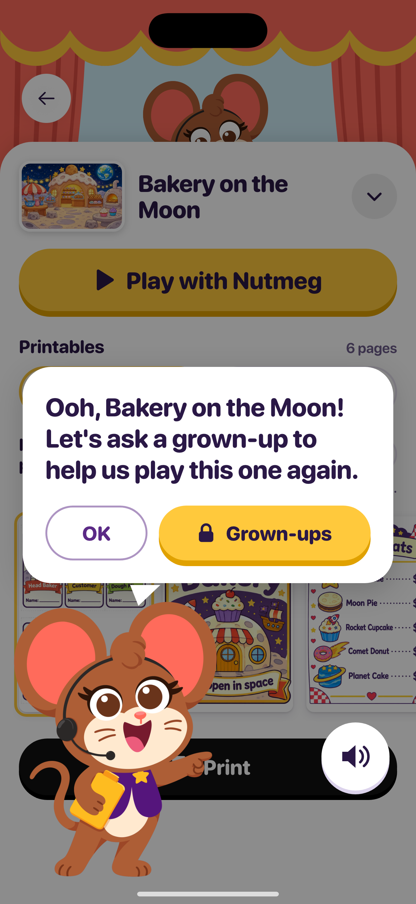
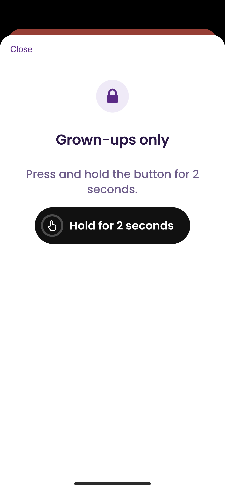
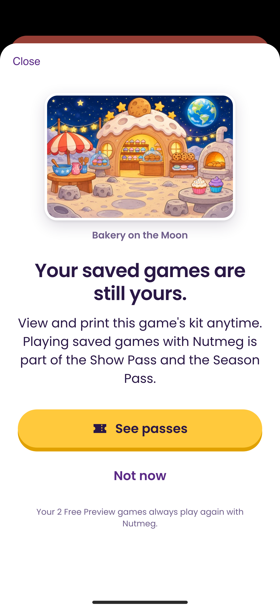
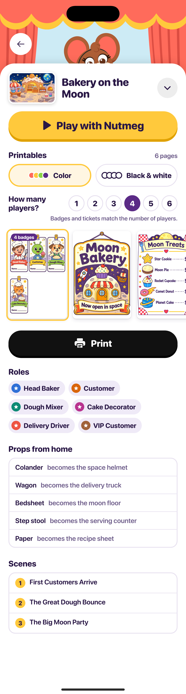

The shelf stays the same. A saved game opens straight to its printables (free forever). Only "Play with Nutmeg" asks for a pass. The 2 Free Preview games always play again.
1Bookshelf, unchanged
No locks, nothing grayed out, no marks on the covers.

2Kid taps a game: its page
Cover, printables, color or black and white, players 1 to 6 (badges show 4), Print. Plus "Play with Nutmeg".

3Kid taps "Play with Nutmeg"
Nutmeg's friendly line. No prices, no plan names for kids.

4Grown-ups check
The app's existing gate: hold 2 seconds, then tap the spelled-out number.

5Grown-up card
The cover, the reassurance, See passes or Not now.

BAlternate: page with a recap
Same page plus roles, props and scene titles as plain text (scroll down). Compare with 2.
